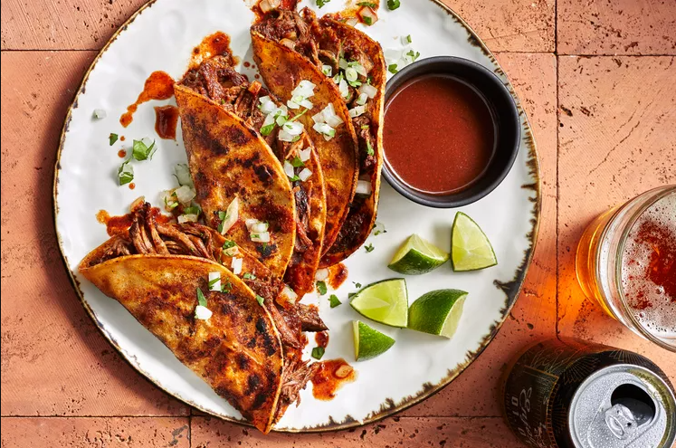

Birria Tacos

Birria holds a special place in Mexican culinary tradition, originating from the
state of Jalisco as a flavorful stew typically prepared with goat, beef, or lamb.
In this birria tacos recipe, the meat marinates in adobo sauce before simmering in
adobo broth until it reaches mouthwatering tenderness. The resulting shredded meat
becomes an irresistible taco filling, especially when garnished with onion,
cilantro, and a splash of lime. While store-bought tortillas suffice, if you have
the time (and a tortilla press), nothing compares to the taste of homemade ones.
Ingredients
- 1 (2-pound) boneless chuck roast (about 2 1/4-inches thick)
- 2 pounds Enlgish-cut beef short ribs (about 3 ribs)
- 2 tablespoons plus 1/4 teaspoon kosher salt, divided, plus more to taste
- Adobo
- 8 cups water
- 1 cup finely chopped white onion, rinsed
- 1/3 cup finely chopped fresh cilantro
- Canola oil, for greasing
- 32 (6-inch) fresh corn torillas or 16 packaged corn torialls
- Lime wedges, for serving
Steps
- Gather the ingredients
- Sprinkle chuck roast and short ribs all over with 2 tablespoons salt.
Combine roast, ribs, and adobo in a large nonreactive bowl; toss to coat.
Cover and chill at least 4 hours or up to 24 hours.
- Preheat oven to 300°F. Transfer adobo mixture to a large (9 1/2-quart)
Dutch oven; add 8 cups water. Bring to a simmer, uncovered, over medium,
stirring occasionally.
- Cover with lid and place in preheated oven. Bake until meat is fork-tender, about 4 hours.
- Remove chuck roast and short ribs from braising broth and transfer to a large
bowl; cover with aluminum foil to keep warm.
- Return broth in Dutch oven to heat over medium and cook, uncovered,
skimming off fat as needed, until reduced to about 8 cups, 15 to 20 minutes.
Season broth with salt to taste.
- Shred meat; discard bones
- Toss meat with 1 1/2 cups of the broth.
- Stir together onion, cilantro, and remaining 1/4 teaspoon salt in a small
bowl; set aside.
- Heat a large nonstick electric griddle to 400°F or a large (12-inch)
cast-iron skillet over medium-high. Using a paper towel dipped in canola oil,
lightly grease griddle. If using fresh tortillas, stack two tortillas, and
use tongs to dip them together into adobo broth. (If using packaged
tortillas, dip one tortilla per taco.)
- Place stacked tortillas on griddle; top with 1/4 cup meat. Repeat
with as many tortilla stacks as will comfortably fit on griddle. Cook
until bottom tortilla is lightly browned and crispy, 1 to 2 minutes.
- Fold tacos in half, gently pressing with a spatula. Transfer to a
serving plate. Repeat process with oil, adobo broth, remaining tortillas,
and remaining meat.